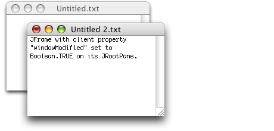
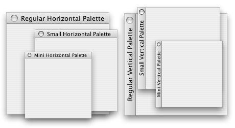

Property |
Type | Notes |
|---|---|---|
|
java.lang.String |
Values: "regular", "small", "mini" |
Quaqua.RootPane.isPalette |
Boolean |
Specifies whether the parent JFrame/JDialog of the JRootPane is
used as a palette window. |
Quaqua.RootPane.isVertical |
Boolean |
Specifies whether the title bar shall be placed vertically or horizontally. |
Window |
Float |
Sets the transparency of the window. |
Window |
File |
Shows the icon of the file in the title bar. |
|
Boolean |
Sets the window modified indicator in the title bar. |
|
Boolean |
Sets the shadow of the window. |
|
java.lang.String |
Values: "regular", "small" |
windowModified |
Boolean |
Sets the window modified indicator in the title bar (deprecated). |
Property |
Type | Notes |
|---|---|---|
RootPane.windowSnapDistance |
Integer |
Specifies the distance up to which windows snap to the edges of each other and to the edges of the screen. Setting this to a value to 0 or smaller, disables window snapping. Note: Snapping is only in effect for look and feel decorated windows. Note: Users can hold down the Alt-Key while moving a window to prevent snapping. |
RootPane |
Boolean |
Default value for the client property |

Sets whether the document contained in the window has been modified and not saved yet.
You should set this property with an argument
of Boolean.TRUE every time the window’s
document changes in such a way that it needs to be saved and with an argument
of Boolean.FALSE every time it gets saved. Then, before closing
the window you can use getClientProperty("windowModified") to determine
whether to allow the user a chance to save
the document.
These properties can be used to realize floating palette windows.

These properties are only in effect, when the JRootPane decorates the JFrame/JDialog.
Setting the property Quaqua.RootPane.isPalette to true makes the title bar of the JFrame/JDialog always draw in the active state.
Setting the property Quaqua.RootPane.isVertical to true places the title bar of the JFrame/JDialog on the left instead of on the top.
Floating palettes work best, when the font size of the JRootPane is set to 11 or to 9. Font size 11 results in a small sized title bar. This is useful if you want to display a title in the title bar. Font size 9 is useful, if no title shall be displayed. Instead of setting the font size, you can set the client property JComponent.sizeVariant.
The following code snippet shows how to use the client properties and the font size:
|
Note: To create a true floating palette, you are required to implement a handler which hides all floating palettes when no application window is active.